Inclusion-Exclusion Principle¶
Basic Set Theory¶
Consider a set U of the first 100 positive integers. Let A be the subset of U that contains the numbers that are divisible by 2, B the subset of U that contains the numbers that are divisible by 3, and C the subset of U that contains the numbers that are divisible by 5.
The subset of U that contains the elements of set U that do not belong to A is called the complement of set A with respect to set U and is denoted by . In this case, the complement of A contains the odd numbers in the first 100 positive integers.
The set of numbers that are either in set A, or in set B, or in both is called the union of sets A and B and is denoted by . This set contains numbers that are divisible by 2, 3, or both.
The set of numbers that are in both sets A and B is called the intersection of sets A and B and is denoted by . This set contains numbers that are divisible by both 2 and 3 i.e. the numbers divisible by 6.
While considering such problems, a Venn diagram is very useful. The images below show the different regions in the Venn diagram in green.
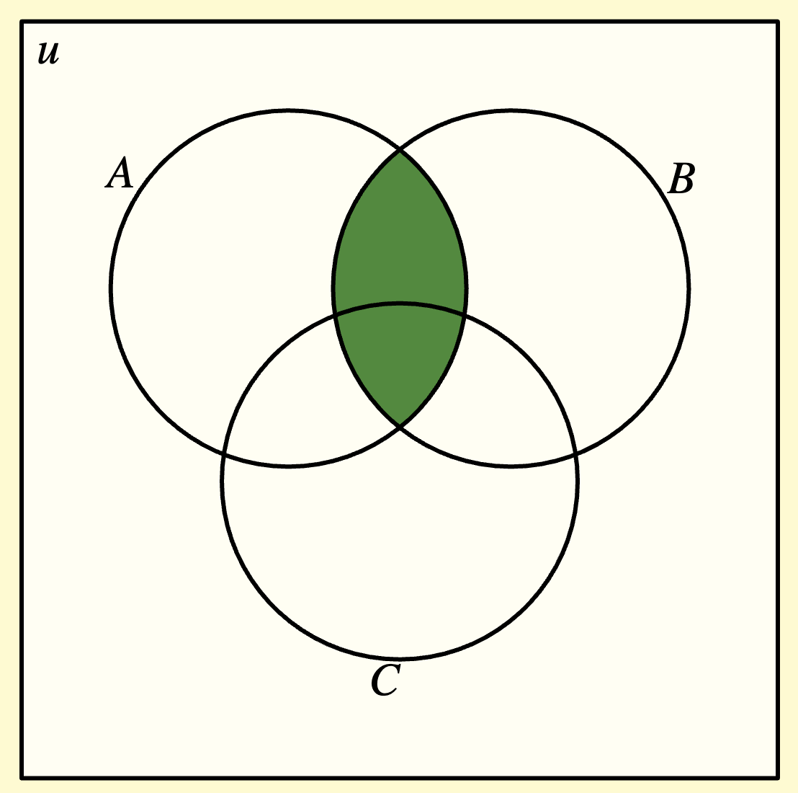 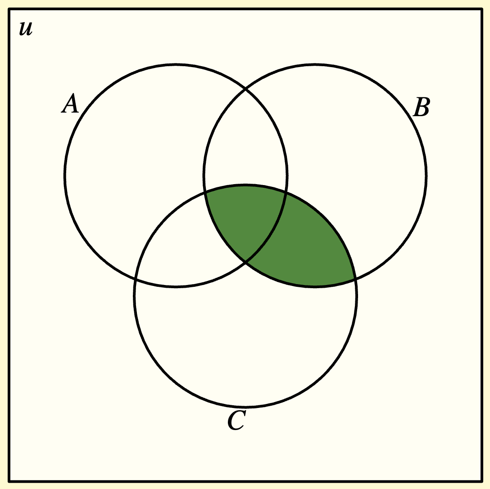 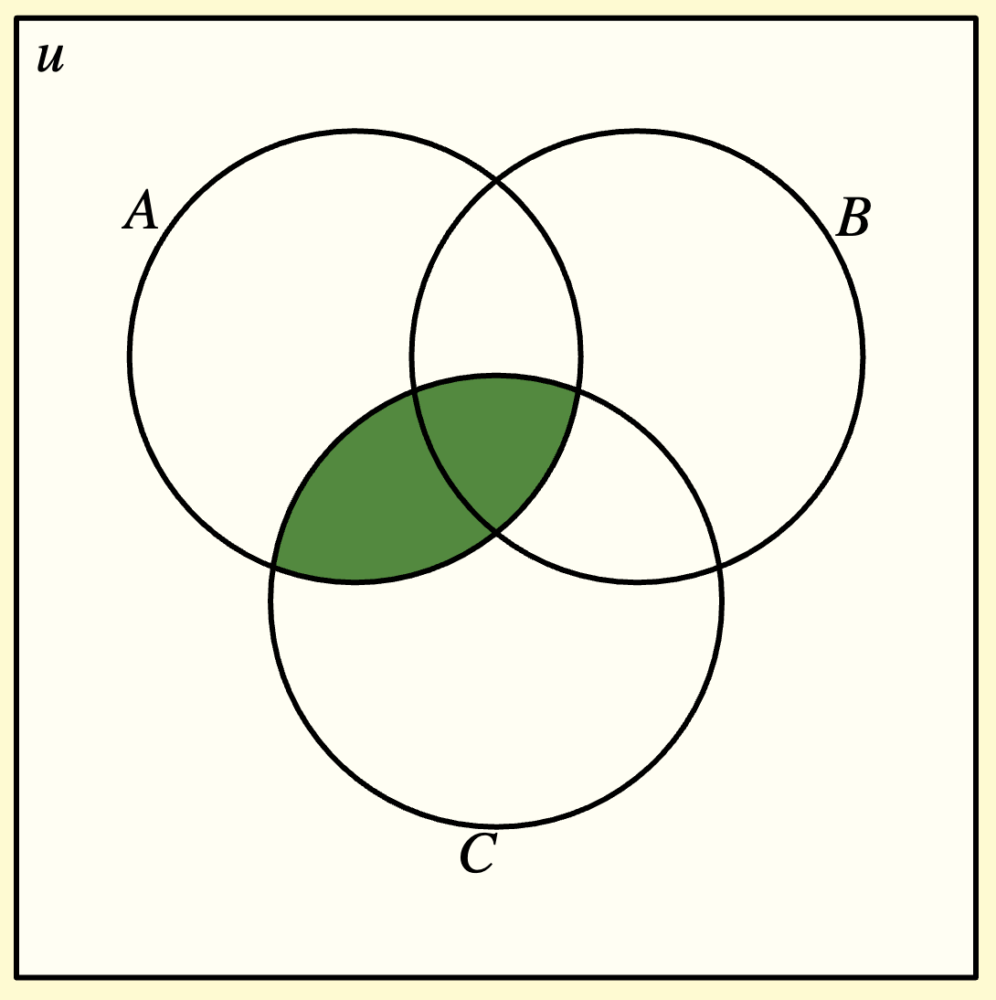 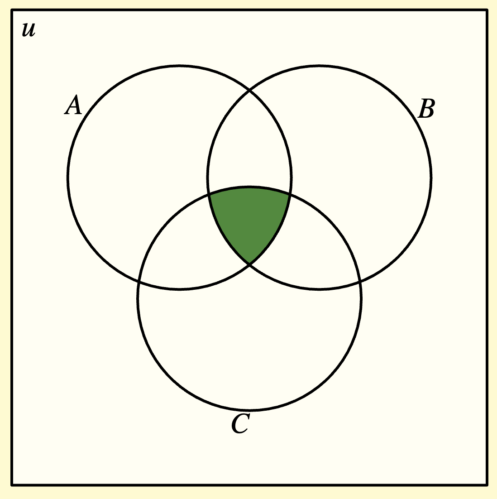 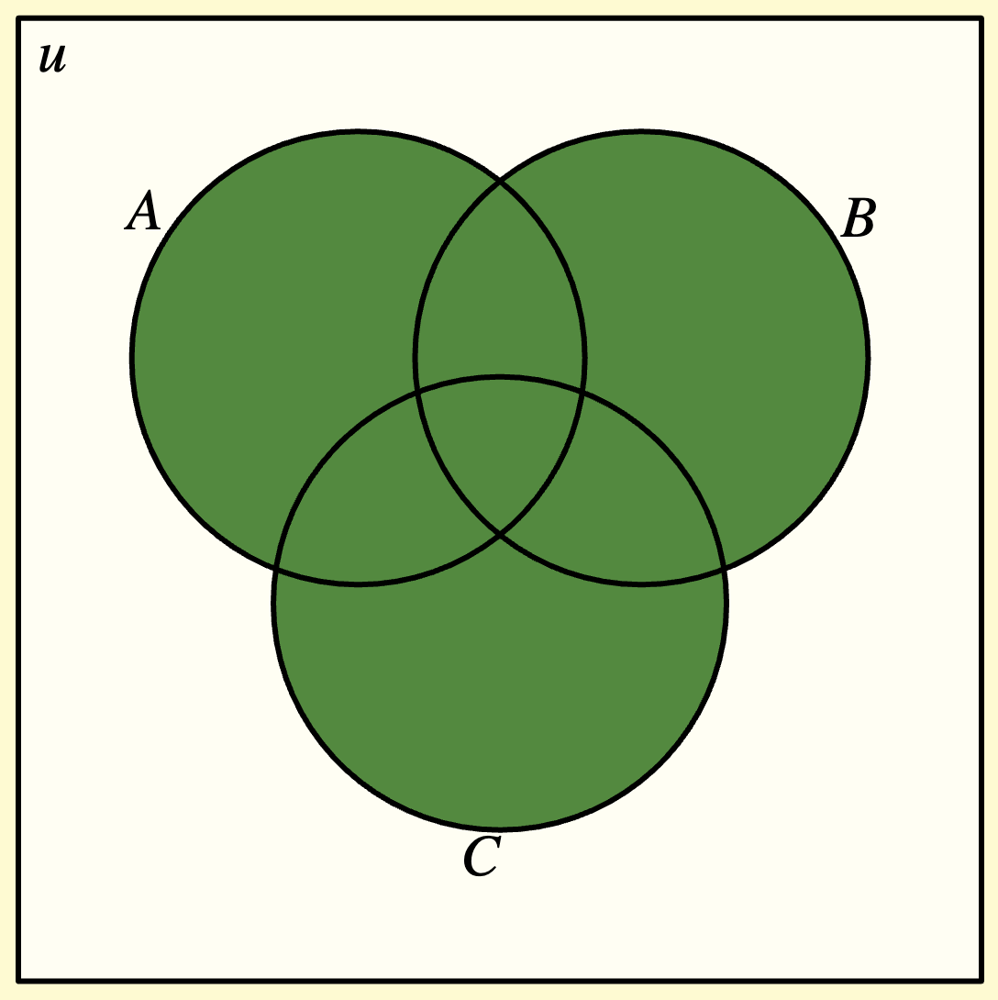 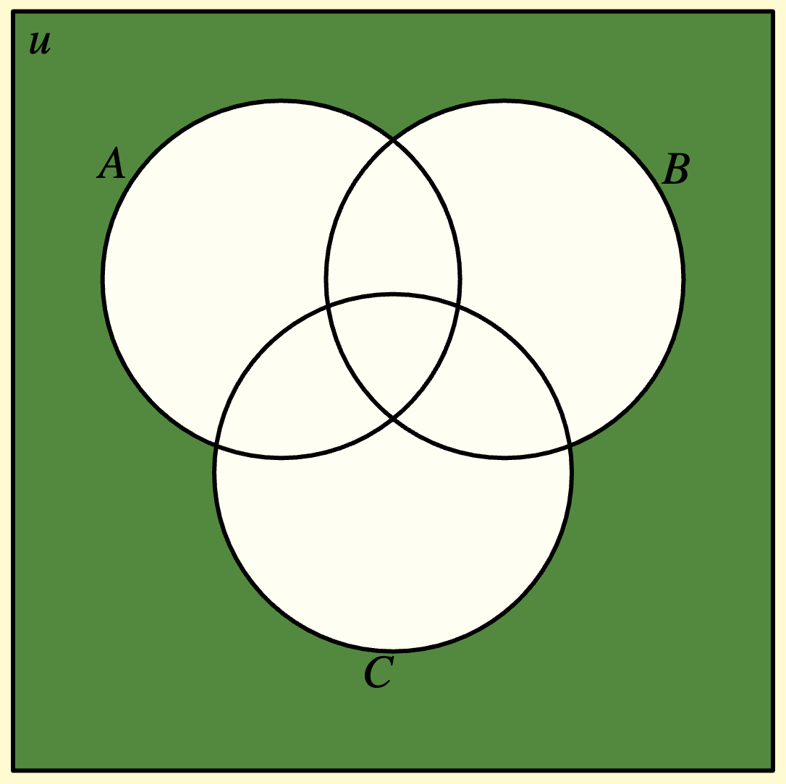{kind=link}
{kind=link}
{kind=link}
{kind=link}
{kind=link}
{kind=link}
When the number of sets grow, it is difficult to label the different regions. One could use the following scheme shown for three sets.
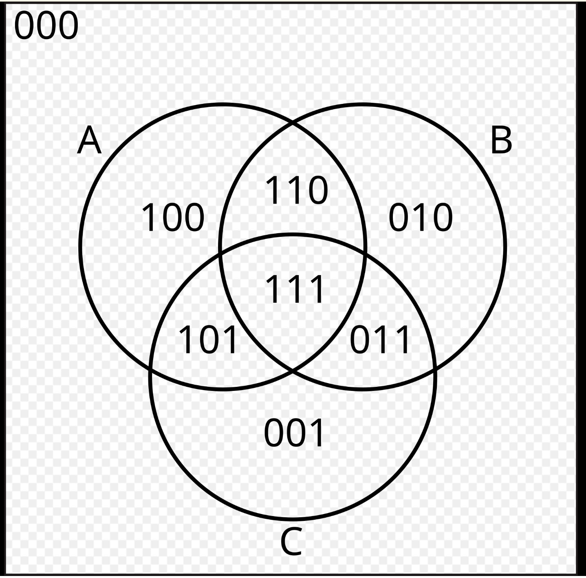{kind=link}
The different regions are labelled by three digit numbers consisting of base 2 i.e. only two symbols 0 or 1. The leftmost digit indicates whether the region is a part of set A. The middle digit indicates whether the region is a part of set B, and finally the rightmost digit indicates whether the region is a part of set C.
Thus, consists of regions whose first two digits are 1 and consists of regions where either one or two of the first two digits are 1.
The union of A, B, and C - consists of regions where at least one of the three digits is 1. The intersection of A, B, and C - consists of the single region where all three digits are 1.
Finally, the region which is in none of the sets A, B, and C is indicated by 000. This is the complement of the union of the three sets.
Counting by including and excluding¶
Let the number of elements of a set  is denoted by 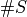. This is also called the cardinality of set .
is denoted by 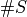. This is also called the cardinality of set .
Clearly, 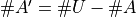. This is complementary counting. This applies in general. So . We will use this concept in problems called “derangements”.
In the following discussion, we will keep referring to the above Venn diagram with the base 2 or binary digits. For convenience, we replicate the image below. The following results can be verified from the diagram.
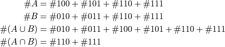
With the intention of computing 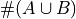, suppose we just add 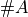 and 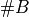, then we would have included the 110 and 111 regions twice. Thus, we need to subtract these regions once. However, these two regions make up . Hence,
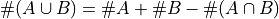.
This is a simple example of counting by including and excluding regions.
If we were to extend this logic to compute , we would add the number of elements in the three sets and then subtract the two-way intersection counts i.e.
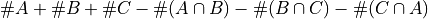,
the regions 110, 101, and 011 would get added in twice and subtracted off once as in the two set case. However, the region 111 would get added in thrice and subtracted off thrice. Hence, we need to add it back once. Region 111 is . Therefore,
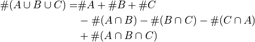
This logic can be extended to 4 sets, 5 sets and so on. The pattern is to include the sets, exclude the double intersections, include the triple intersections, exclude the quadruple intersections, and so on.
Note that if there is no overlap between the sets, the sets are called “disjoint” or “mutually exclusive”. In this case, all the intersections have cardinality 0 and we are back to the addition principle:
.
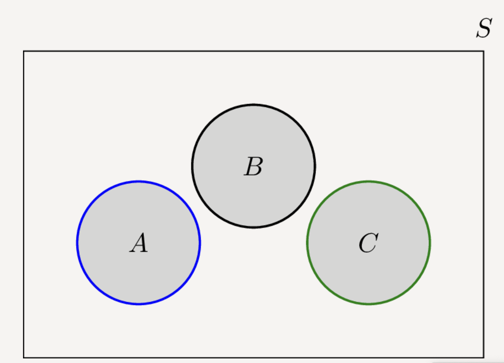{kind=link}
Derangements¶
Example: There are 4 students with 4 assigned seats. In how many ways can the students sit on the 4 seats such that no student sits on his/her assigned seat.
Let U be the set of all configurations (ignoring any seat assignment constraints). Let A be the set of configurations where the first student is sitting on the assigned seat, B be the set of configurations where the second student is sitting on the assigned seat, and so on. will be the set of configurations where both of the first two students are sitting on their assigned seats.
The number we are looking for is .
The problem is symmetric in the four students. Hence,
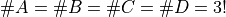, 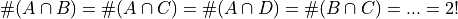, and so on. Note, if A is sitting on the assigned seat, the other three students can be shuffled in P(3,3)=3! ways. If A and B are sitting on their assigned seats, the other two students can be shuffled in P(2,2)=2! ways.
Hence,
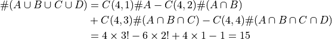
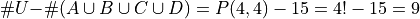
Here is another example
In how many ways can 12 distinguishable presents be given to three people such that every person gets at least one present and all the presents are given out?
Let:
U be the set that contains the ways in which the presents are given out without the stipulation that every person gets at least one present.
A be the set that contains the ways in which the first person gets no present.
B be the set that contains the ways in which the second person gets no present.
C be the set that contains the ways in which the third person gets no present.
The answer is the cardinality of .
![\#U &= 3^{12}~\text{(Power principle: Each present can be distributed in 3 ways)}
\#A &=\#B=\#C= 2^{12}~\text{(Power principle: Each present can be distributed in 2 ways)}
\#(A\cap B) &=\#(B\cap C)=\#(C\cap A)=1~\text{(All presents go the remaining person)}
\#(A\cap B\cap C) &=0~\text{(Someone has to get the presents)}
\#(A\cup B\cup C) &=C(3,1) \#A -C(3,2) \#(A\cap B) + C(3,3) \#(A\cap B\cap C)
&=3\times 2^{12}-3\times 1+0=3\left(2^{12}-1\right)
\#U - \#(A\cup B\cup C) &=3^{12}-3\left(2^{12}-1\right)](_images/math/2d5bc55be4a0b3a4d8809cac02e08875ed74e4f1.png)